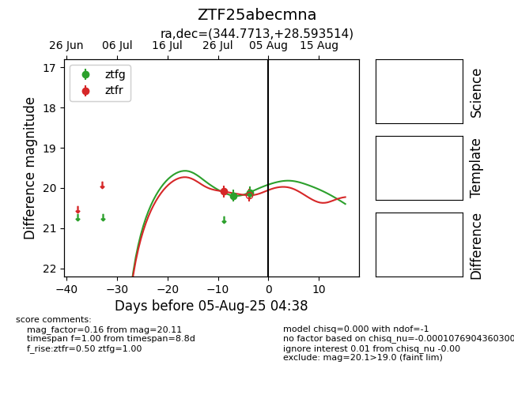

Target ZTF25abecmna at 2025-08-05 04:38, see:
FINK: fink-portal.org/ZTF25abecmna
Lasair: lasair-ztf.lsst.ac.uk/objects/ZTF25abecmna
ALeRCE: alerce.online/object/ZTF25abecmna
alt names
ZTF25abecmna (ztf,fink)
coordinates:
equatorial (ra, dec) = (344.7713,+28.59351)
galactic (l, b) = (94.9824,-28.11075)
photometry
last ztfg=20.11, ztfr=20.09
2 ztfg, 1 ztfr detections
